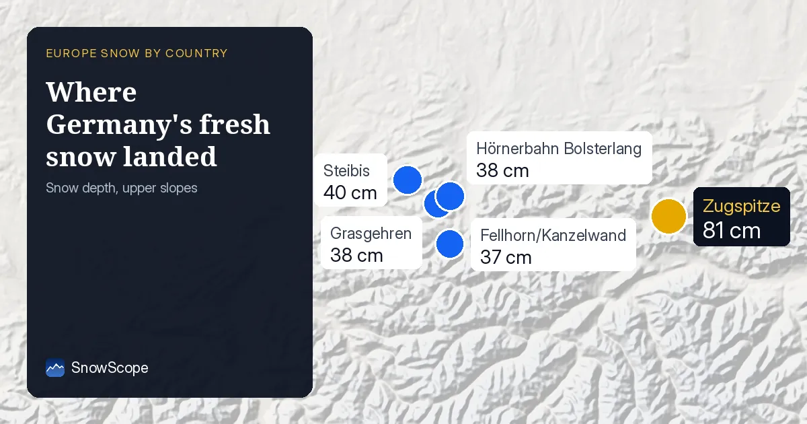
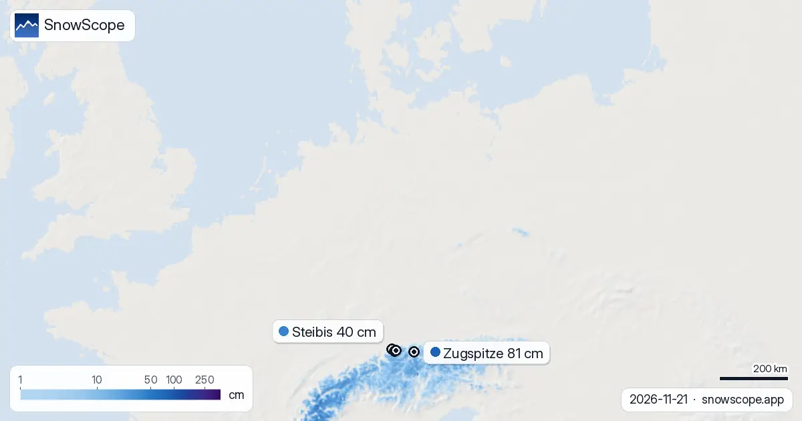
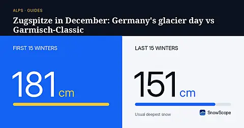

Where Germany's fresh snow landed: 39 cm in the Allgäu Alps
The past three days brought very different snow depths to different parts of Germany. The Allgäu Alps caught the heaviest snow at 39 cm, while the Bavarian Alps received 31 cm and the Black Forest only 16 cm.
See the live snow forecast for Zugspitze in the SnowScope appSnow depth, powder alerts and the 3D map, free.
Three ranges, three snow totals
When I work in high mountains, I learn quickly that storms do not fall evenly. The same system that moves in from the west hits higher ranges first and harder, then weakens as it moves east and down. That is what happened here over the past 72 hours. SnowScope shows the Allgäu Alps received 39 cm of fresh snow, making it the clear winner across Germany. The Bavarian Alps, further south and slightly lower, caught 31 cm. And the Black Forest, much lower and further north, saw only 16 cm. This range-by-range pattern tells you where to look for the best conditions right now.
The Allgäu Alps straddle the border between Bavaria and Baden-Württemberg. Their peaks and ridges force air upward, squeezing more moisture out of the system. The Bavarian Alps, centered around Zugspitze and the high peaks near Austria, got strong snow too but slightly less. The Black Forest, a lower and more rounded range to the northwest, was at the back of the storm track. By the time the system reached there, it had already given most of its snow to the higher ground.
| Resort | Snow depth | New snow, 72 h | Coming, next days | Top |
|---|---|---|---|---|
| Zugspitze | 81 cm | 31 cm | 29 cm | 2,627 m |
| Steibis | 40 cm | 33 cm | 29 cm | 1,704 m |
| Grasgehren | 38 cm | 32 cm | 30 cm | 1,674 m |
| Hörnerbahn Bolsterlang | 38 cm | 32 cm | 30 cm | 1,662 m |
| Fellhorn/Kanzelwand | 37 cm | 33 cm | 33 cm | 1,965 m |

What fell and where it sits
In the past 24 hours alone, our estimates 10 cm fell. Over 72 hours, the maximum was 18 cm across a region of about 2,200 km2. That sounds like a small area, but it is the stripe where the snow was heavy enough to build real depth. Zugspitze, Germany's highest resort at 2,627 m, now sits under 81 cm of snow. That depth grew by 31 cm in the past 72 hours. Steibis and Grasgehren, both in the Allgäu, added 32 to 33 cm. Hörnerbahn Bolsterlang and Fellhorn/Kanzelwand also gained around 32 to 33 cm each.
The snow line sits at 1,100 m today. Below that, almost nothing lies. Between 1,000 and 1,500 m, you will find only about 4 cm on average and snow covers just 70 percent of the ground. At 1,500 to 2,000 m, the depth jumps to 16 cm and cover is complete. At 2,000 to 2,500 m, 25 cm is the average. This is early season snow on thin ground. Where terrain is rocky or steep, you are likely to ski over rocks or bare patches still.

Best conditions at height right now
The best snow is found above 1,500 m. Zugspitze has the most reliable base because it sits at 2,627 m, well above the snow line. Its 81 cm is real, continuous snow. The Allgäu resorts like Steibis, Grasgehren, and Hörnerbahn Bolsterlang all sit around 1,600 to 1,700 m at their peaks. They have 38 to 40 cm right now. Fellhorn/Kanzelwand reaches 1,965 m and holds 37 cm. These numbers are solid for late November, but remember: this is new snow on old, thin ground. At lower elevations, 500 to 1,000 m, almost no snow sits at all. Even the zone between 1,000 and 1,500 m is patchy. If a resort's top is below 1,500 m, you should expect cover to be incomplete.
More snow is coming tonight and tomorrow
The pattern that dropped this fresh snow is not done yet. Tomorrow, 2026-11-22, is the snowiest day in the forecast. We expect 14 cm across the region. Over the next three days, the forecast maximum reaches 20 cm. Over the next seven days, 26 cm is possible. The system is moving slowly, and the same ranges that caught the most snow in the past 72 hours will likely catch more of what is coming.
How this week compares
One week ago, on 2026-11-14, 5,700 km2 of Germany lay under snow. Today it is 3,050 km2. That drop looks large, but it reflects the natural melt and fall of early-season snow when the ground is still warm. What matters is that fresh snow came, and it came to height. Only about 7 percent of the mapped area is white right now, but on the high slopes, conditions are building. In the second week of December, another system could bring 5 cm more.
The bigger picture
Austria, to the east, is running ahead with 56 percent snow cover and 63 cm at Stubaier Gletscher. Switzerland, to the south, is well ahead with 64 percent cover and 86 cm at Anzère, with 74 cm possible in the next seven days. Germany is catching up. The Allgäu and Bavarian Alps are now in the game. Watch the forecast for 2026-11-22 and beyond; more snow is on the track.
Tips for skiers
- Ski above 1,500 m where snow is continuous and deep. Below 1,500 m, cover is thin and incomplete; expect rocks and bare patches.
- The Allgäu Alps have the most snow. If you have a choice, go there or to Zugspitze rather than lower resorts.
- Fresh snow on thin base can hide rocks and rough ground. Check the official avalanche bulletin for your region before going off-piste.
- Tomorrow and the next two days will bring more snow. Plan to be at height when the system arrives.
- This is early season; stay on-piste and marked terrain. Early snow often sits unevenly and can be unstable.
About these numbers
Resort snow depths are the deepest snow on the resort's upper slopes on the date shown; they are estimates for an area, not a measurement at one point. Forecasts can change. Always read the official avalanche bulletin before going off-piste.
Cite this report
For research, teaching or the press: the numbers and charts are free to reuse under CC BY 4.0 with this citation.
SnowScope (2026), Where Germany's fresh snow landed: 39 cm in the Allgäu Alps, https://snowscope.app/blog/en/2026/11/germany-where-the-snow-fell-21-november-2026.html, accessed 2026-11-21
SnowScope (Atlas Labs). (2026, November 21). Where Germany's fresh snow landed: 39 cm in the Allgäu Alps. SnowScope snow reports. https://snowscope.app/blog/en/2026/11/germany-where-the-snow-fell-21-november-2026.html
BibTeX
@misc{snowscope2026germanywherethesnowfell2,
author = {{SnowScope (Atlas Labs)}},
title = {Where Germany's fresh snow landed: 39 cm in the Allgäu Alps},
year = {2026},
month = nov,
howpublished = {\url{https://snowscope.app/blog/en/2026/11/germany-where-the-snow-fell-21-november-2026.html}},
note = {Published 2026-11-21 13:33 UTC; accessed 2026-11-21}
}· CC BY 4.0 · Methods, data and tools →
Zugspitze: snow and temperature by height, this winter vs last (tools) →
Follow Zugspitze
Free: a message when fresh snow is coming, and the forecast every morning.
More snow reports

Zugspitze tops the region with 63 cm on 23 November. Nine resorts have snow; 34 cm fell in three days at Nebelhorn.

Zugspitze glacier has 122 cm typical snow on 15 December at 2627 m; Garmisch-Classic top has 57 cm. Same price, different snow cover. Data from 46 winters.

On 15 December at Fellhorn/Kanzelwand: 63 cm at 1965 m top, 30 cm at mid-mountain, only 10 cm at 918 m base. Plan accordingly.